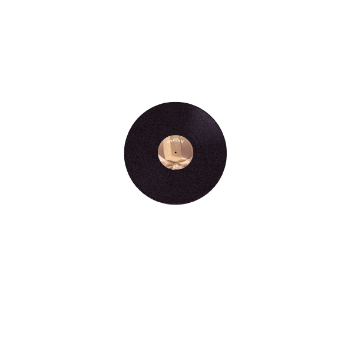
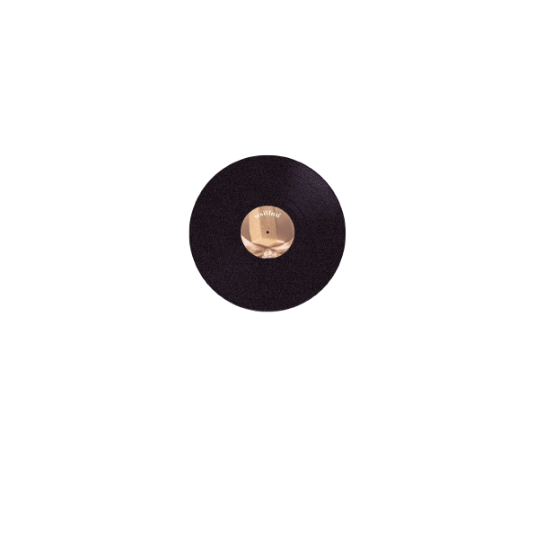
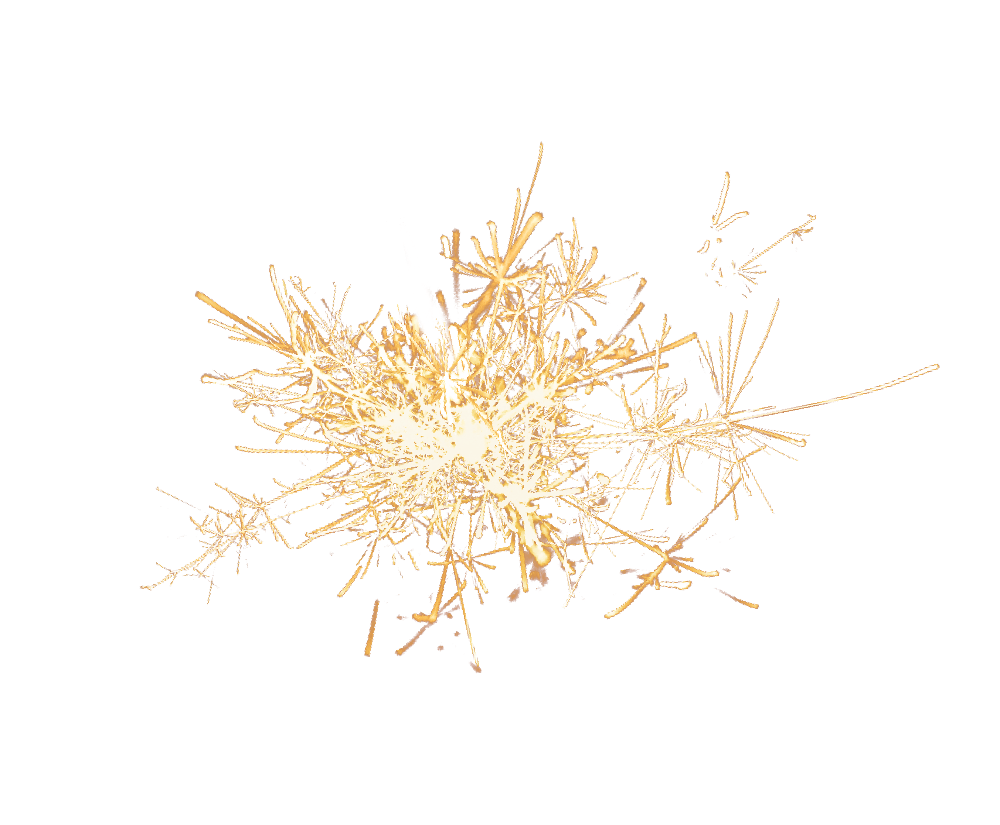
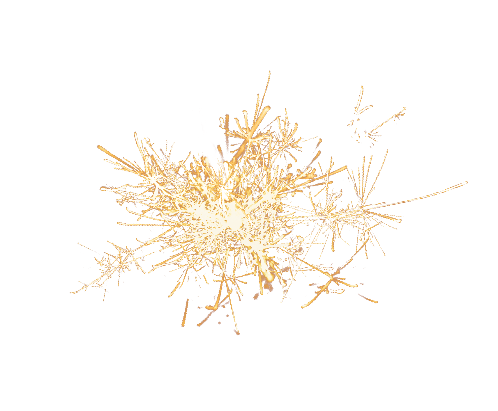

Click Record Arm To Turn record on/off.
“พรปีใหม่”
(New Year Wish)
เพลงพระราชนิพนธ์ลำดับ 13
ทรงพระราชนิพนธ์เมื่อเสด็จนิวัตพระนคร
และประทับ ณ พระตำหนักจิตรลดา รโหฐานมีพระประสงค์ที่จะพระราชทานพรปีใหม่แก่พสกนิกรด้วยบทเพลงและได้พระเจ้าวรวงศ์เธอพระองค์เจ้าจักรพันธ์เพ็ญศิริ นิพนธ์คำร้องเป็นคำอวยพรปีใหม่แล้วพระราชทานวงดนตรีนิสิตจุฬาลงกรณ์ มหาวิทยาลัย นำออกบรรเลง ณ จุฬาลงกรณ์มหาวิทยาลัย และวงดนตรีสุนทราภรณ์ นำออกบรรเลง ณ ศาลาเฉลิมไทย ในวันปีใหม่ปี 2495
“เนื้อเพลง”
สวัสดีวันปีใหม่พา
ให้บรรดาเราท่านรื่นรมย์
ฤกษ์ยามดีเปรมปรีดิ์ชื่นชม
ต่างสุขสมนิยมยินดี
ข้าวิงวอนขอพรจากฟ้า
ให้บรรดาปวงท่านสุขศรี
โปรดประทานพรโดยปราณี
ให้ชาวไทยล้วนมีโชคชัย
ให้บรรดาปวงท่านสุขสันต์ทุกวันทุกคืน
ชื่นชมให้สมฤทัยให้รุ่งเรืองในวันปีใหม่
ผองชาวไทยจงสวัสดี
ตลอดปีจงมีสุขใจ
ตลอดไปนับแต่บัดนี้
ให้สิ้นทุกข์สุขเกษมเปรมปรีดิ์
สวัสดีวันปีใหม่เทอญ


 



 
